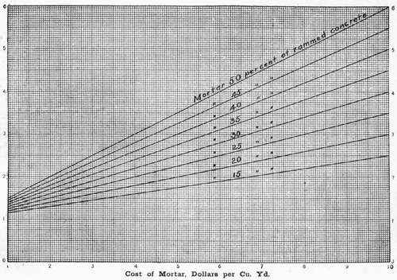

Art. 44. Cost Of Concrete
Description
This section is from the book "Cement And Concrete", by Louis Carlton Sabin. Also available from Amazon: Cement and Concrete.
Art. 44. Cost Of Concrete
345. Quantities Of Ingredients In A Cubic Yard
As has already been indicated, the rational method of proportioning concrete is to use just sufficient mortar to fill the voids in the stone, or possibly a very small excess to allow for imperfect mixing; and in ordinary practice this rule should not be departed from unless it be for some special reason. When so proportioned, a cubic yard of concrete will contain approximately a cubic yard of stone, depending on the method of measurement. If we know the percentage of voids in the broken stone or gravel, and consequently the percentage of mortar which should be found in a cubic yard of the finished concrete, we may readily obtain the approximate Cost per cubic yard of the latter for a given quality of mortar and given unit prices.
Thus, suppose we have stone in which the voids are such that the mortar will amount to forty per cent, of the finished concrete, and we wish to have the mortar composed of three volumes of loose sand to one volume packed natural cement, unit prices being as follows:
Cement, $1.25 per barrel of 300 pounds net, 3.75 cubic feet.
Sand, $1.00 per cubic yard.
Stone, $1.75 per cubic yard.
As in § 290, we .find the ingredients in one cubic yard of mortar to Cost $3.33. Since forty per cent, of the concrete is to be composed of mortar, the mortar in one cubic yard of concrete will Cost forty per cent, of $3.33, or $1.33, and one yard of stone at $1.75 will make the total Cost of the materials in the concrete $3.08 per cubic yard.
The diagram herewith may be used to get the approximate Cost of the concrete after having obtained the Cost of the mortar as before. Thus, if we enter the diagram with the Cost of mortar $3.33, and follow it to the diagonal line marked forty per cent., we find this is on the ordinate $2.33, the cost of the ingredients in one cubic yard of concrete when the stone costs one dollar per cubic yard. Hence, $2.33 plus $0.75 equals $3.08, the approximate cost of the materials in a cubic yard of the concrete as desired.
346. The usual method, however, of stating proportions in concrete is to give the volumes of sand and stone to one volume of cement. Thus, one of cement, three of sand and six of stone would usually mean one volume of packed cement, three volumes of loose sand and six volumes of loose broken stone. To arrive at the cost of concrete when proportions are thus arbitrarily stated, involves a greater amount of work. From the tables already given (Art. 36), we can determine the amount of mortar which a given quantity of dry ingredients will make, and the consequent Cost of the mortar per cubic yard. Then a knowledge of the voids in the broken stone will permit of a close estimate of the amount of concrete made, whence we can determine the Cost of the latter.
For example, suppose it is desired to determine the Cost of the materials in a cubic yard of natural cement concrete under the following conditions:
1 bbl. cement containing 280 pounds net, at $1.00 per bbl.
3 bbls. sand weighing 100 pounds per cu. ft., at $.75 per cu. yd.
6 bbls. loose broken stone, having 45 per cent, voids, at $1.25 per cu. yd.
1 bbl. cement = 3.75 cu. ft. = .139 cu. yd., Cost $1.000
3 bbls. sand = 11.25 cu. ft. = .417 cu. yd., Cost .313
6 bbls. stone = 22.50 cu. ft. = .833 cu. yd., Cost 1.041
Total Cost............$2,354
From Table 61, § 286, we find that it requires 2.03 barrels of cement to make one cubic yard of one-to-three mortar, when proportions are stated as above; then one barrel of cement would make 1/2.03 = .493 cu. yd. As forty-five per cent, of the stone is voids, the amount of solid stone in six barrels would be (6x3.75)/27 x .55 = .458 cu. yd. Then the mortar plus solid stone would be .493 + .458 = .951 cu. yd. It has been found by experiment that the amount of concrete will exceed the sum of the mortar and solid stone by from two to five per cent.; hence we may assume in this case that the amount of concrete made with the above materials would be .95 + .03 = .98 cu. yd., and 2.354/ .98 = $2.40, the Cost of materials in one cubic yard of finished concrete. To obtain the actual cost of concrete in place, the Cost of mixing and deposition must be added (see Arts. 41 and 43). When the volume of mortar used is not greater than the voids in the loose stone, then the amount of rammed concrete made may be less than the volume of loose broken stone.
Cost of Concrete, Dollars per Cu. Yd. Stone Assumed to Cost $1.00 per Cu, Yd.
EXAMPLES OF Cost.
347. Examples Of Actual Cost Of Concrete
The following data are given concerning the cost of concrete on several works where sufficient details have been published to be of value.
Defenses Staten Island.1 Cubical box mixer; proportions by volume, 1 cement, 3 sand, 5 broken stone; 5,609 cu. yds. of concrete.
Items. | Cost per Cu. Yd. Concrete in Place. |
Cement, Portland, at $1.98 per bbl...... Broken trap rock.......... Sand drawn from beach........ Receiving and storing materials...... mixing, placing and ramming...... forms, lumber and labor........ Superintendence and miscellaneous .... | $2.546 1.041 0.225 0.149 0.879 0.477 0.190 |
Total Cost per cu. yd........ | $5.507 |
It is stated that hand mixing for a portion of the concrete used in another emplacement Cost fifty-six cents more per cubic yard than machine mixing.
1 Major M. B. Adams in charge. Report Chief of Engineers, U.S.A., 1900, p. 837.
348. Defenses Tampa Bay, Florida
1 — Cockburn-Barrow mixer, with cableway for placing concrete. Shell concrete made up of 1 cement, 3 1/2 sand and 5 1/2 shell.
1.31 bbls. cement, at $2.42 per bbl. ...... $3.17
.71 cu. yd. sand, at 21 cents per cu. yd..... .15
1.08 cu. yd. shell, at 50 cents per cu. yd..... 5.4 $3.86
Labor mixing................ $0.28
Labor placing and tamping.......... .33
Labor on forms............... .155 .765
Total Cost per cubic yard...... $4.625
The above does not appear to include costs of running machinery, fuel, repairs, and depreciation of plant.
At the same battery 2 in the following year the Cost of broken stone and shell concrete was as follows:
Continue to:
- prev: Art. 43. Concrete Mixing Plants And Cost Of Machine Mixing. Continued
- Table of Contents
- next: Art. 44. Cost Of Concrete. Part 2